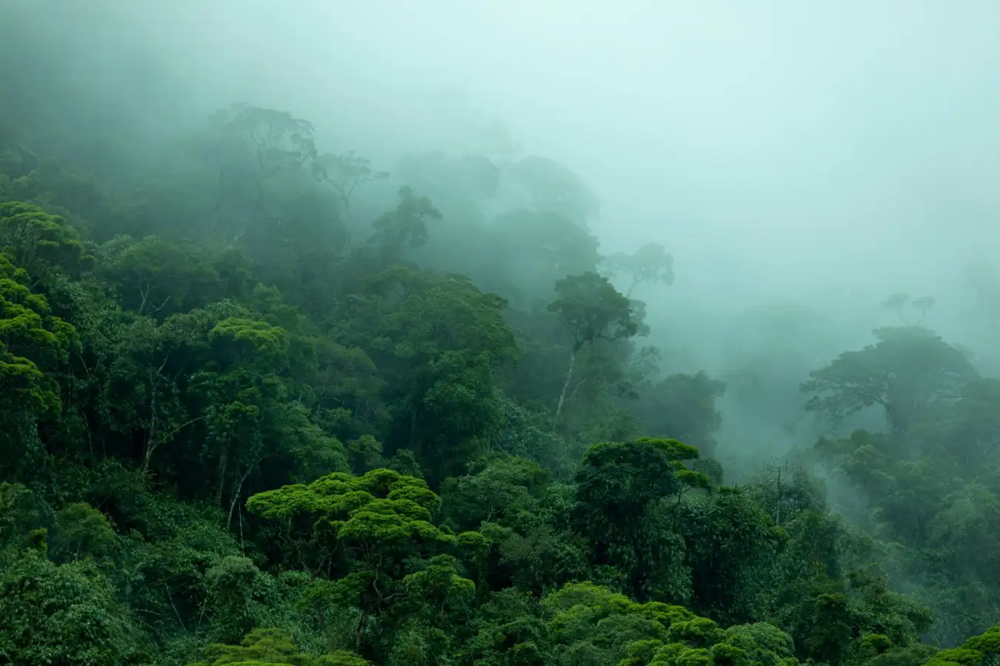
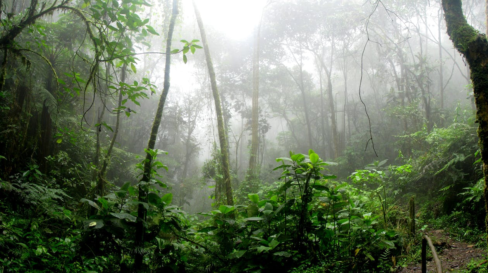

10,5°C en pleine forêt amazonienne : quand des vagues de froid inattendues bousculent la faune tropicale
Récemment relayée par la presse scientifique et environnementale, une étude menée dans le sud de l’Amazonie péruvienne rappelle qu’un autre visage du dérèglement climatique mérite désormais l’attention : le froid brutal en pleine forêt tropicale. En juin 2023, une masse d’air froid a fait chuter la température d’une moyenne quotidienne d’environ 23,9°C à un minimum de 10,5°C, et cette chute a duré presque une semaine. Pour une région généralement associée à une chaleur stable, l’événement a surpris par son intensité, mais surtout par ce qu’il révèle : même les écosystèmes tropicaux ne sont pas à l’abri d’extrêmes thermiques capables de perturber la vie animale.
Une chute thermique qui casse l’image d’forêt toujours chaude
Le choc ne vient pas seulement du chiffre final, mais de l’écart brutal entre la température habituelle de la forêt et le minimum atteint pendant l’épisode. Cette bascule rapide aide à comprendre pourquoi la faune tropicale peut être désorientée, même sans gel extrême.
Une actualité scientifique récente qui change le regard sur l’Amazonie
Le sujet est récent parce qu’il repose sur l’une des premières études quantitatives consacrées aux effets directs des vagues de froid sur la faune sauvage des basses terres amazoniennes. Longtemps, ces épisodes ont surtout été étudiés pour leurs conséquences sur l’agriculture. Désormais, les chercheurs montrent qu’ils affectent aussi l’activité des mammifères, la biomasse des insectes et l’équilibre d’espèces adaptées à des variations thermiques très limitées. L’Amazonie n’apparaît donc plus seulement comme une forêt menacée par la chaleur, la sécheresse ou les incendies, mais aussi comme un milieu vulnérable à des chocs climatiques plus contrastés.
Ces épisodes, souvent appelés friagem ou friaje, ne sont pas totally inconnus dans le bassin amazonien. Entre 1980 et 2017, les scientifiques en ont identifié 67, parfois sur plusieurs jours. Mais l’intérêt récent de cette actualité vient du fait qu’on dispose désormais de données de terrain permettant de mesurer concrètement ce que ces vagues de froid provoquent dans un environnement tropical où la plupart des organismes ont évolué sous des températures relativement stables.

Quand le froid devient un stress écologique
Pendant la vague de froid observée en juin 2023, les chercheurs ont constaté une baisse marquée de l’activité de plusieurs groupes animaux. Les insectes volant ou vivant au sol se sont faits moins nombreux, et les mammifères captés par pièges photographiques sont apparus moins actifs que d’habitude. Cette baisse d’activité n’implique pas forcément une mortalité immédiate, mais elle signale un déséquilibre physiologique : pour beaucoup d’espèces tropicales, le problème n’est pas seulement la température elle-même, mais la rapidité de la chute et la durée de l’exposition.
Les mammifères semblent avoir surtout réduit leurs déplacements pour économiser de l’énergie. Du côté des insectes, la situation est plus délicate. Une partie importante des espèces testées présentait une marge de sécurité thermique très faible par rapport au minimum enregistré. En d’autres termes, certaines n’étaient plus très loin d’un seuil où elles deviennent immobiles, incapables de se nourrir, de fuir ou de maintenir leurs fonctions normales. Dans un milieu tropical, ce type de stress peut suffire à perturber les chaînes écologiques bien au-delà de l’événement lui-même.
Ce qui inquiète vraiment les chercheurs
Dans un milieu tropical, beaucoup d’espèces vivent avec une marge thermique réduite. Elles tolèrent mal les écarts brusques, surtout lorsque le refroidissement dure plusieurs jours.
- baisse de l’activité pour économiser l’énergie ;
- moins de déplacements et d’alimentation ;
- risque accru pour les espèces à faible tolérance.
Une lecture plus fine du problème
Le danger n’est pas seulement la valeur minimale observée. C’est l’effet combiné entre la rapidité de la chute, la durée de l’exposition et la faible préparation physiologique d’une faune habituée à des températures relativement stables.
« En Amazonie, le dérèglement climatique ne signifie pas seulement plus de chaleur : il peut aussi intensifier des contrastes thermiques capables de déstabiliser une faune peu préparée à des refroidissements extrêmes. »
Un signal d’alerte pour l’avenir
L’un des enseignements les plus importants de cette actualité récente est que les animaux observés ont, pour la plupart, fini par retrouver une activité normale après l’épisode froid. Mais cette capacité de récupération ne doit pas masquer le risque plus profond. Les chercheurs soulignent qu’une intensification future de ces vagues de froid pourrait mettre en danger les espèces les plus sensibles, notamment certains insectes dont la tolérance au froid est déjà presque atteinte lors d’événements comparables.
Cette question devient centrale dans un contexte climatique instable, où les extrêmes gagnent en intensité. L’Amazonie est souvent évoquée à travers les sécheresses, les records de chaleur ou les incendies. Pourtant, cette étude récente montre qu’un autre déséquilibre est en train d’émerger : celui d’une forêt tropicale soumise à des écarts thermiques plus brutaux, capables de perturber la biodiversité à bas bruit, sans produire immédiatement des images spectaculaires, mais avec des effets potentiellement durables.
Un climat plus instable, donc une forêt plus exposée
Ce type d’épisode oblige à penser l’Amazonie autrement : non comme un espace figé, mais comme un système vivant qui devient plus sensible aux contrastes, aux anomalies et aux séquences climatiques inhabituelles.

Pourquoi cette nouvelle compte vraiment
Cette page ne traite pas d’un simple épisode météorologique curieux. Elle parle d’un signal scientifique récent qui oblige à revoir l’image simplifiée d’une Amazonie toujours chaude et climatiquement uniforme. Lorsque des fronts froids venus du sud atteignent la forêt et y provoquent des chutes de température inhabituelles sur plusieurs jours, ce sont des milliers d’interactions biologiques qui peuvent être ralenties ou fragilisées. Dans une région où la biodiversité repose sur des équilibres très fins, ces anomalies deviennent un enjeu écologique réel.
En cela, cette actualité s’inscrit pleinement dans les débats contemporains sur la vulnérabilité de l’Amazonie. Préserver la forêt ne consiste pas seulement à éviter sa destruction visible ; cela suppose aussi de comprendre comment un climat plus instable transforme les conditions de vie des espèces qui l’habitent. Le froid extrême en pleine forêt tropicale peut sembler contre-intuitif, mais c’est justement ce caractère inattendu qui en fait aujourd’hui une alerte si forte.